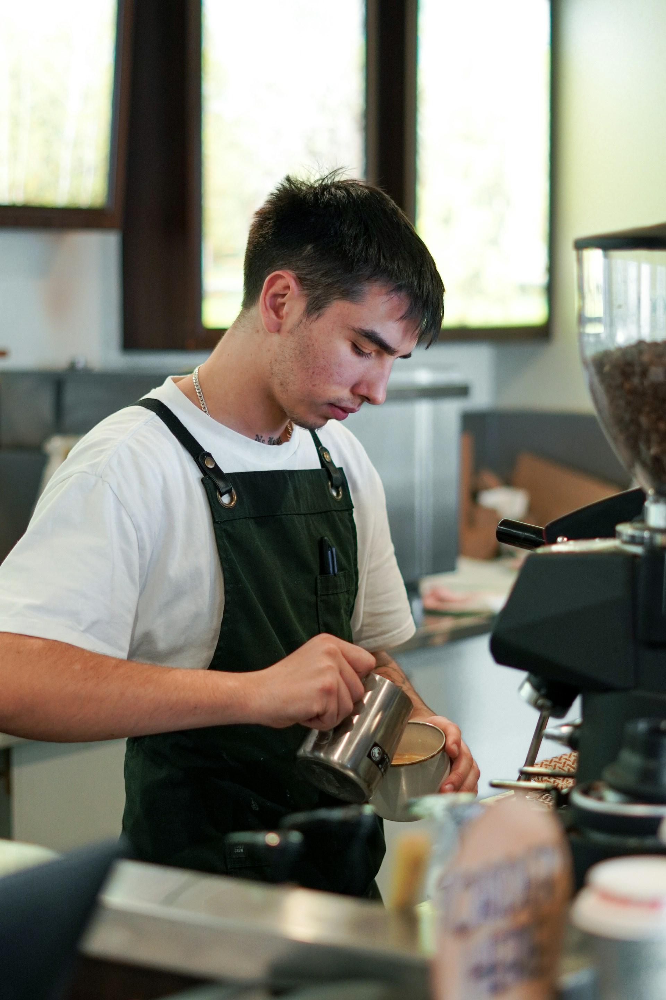
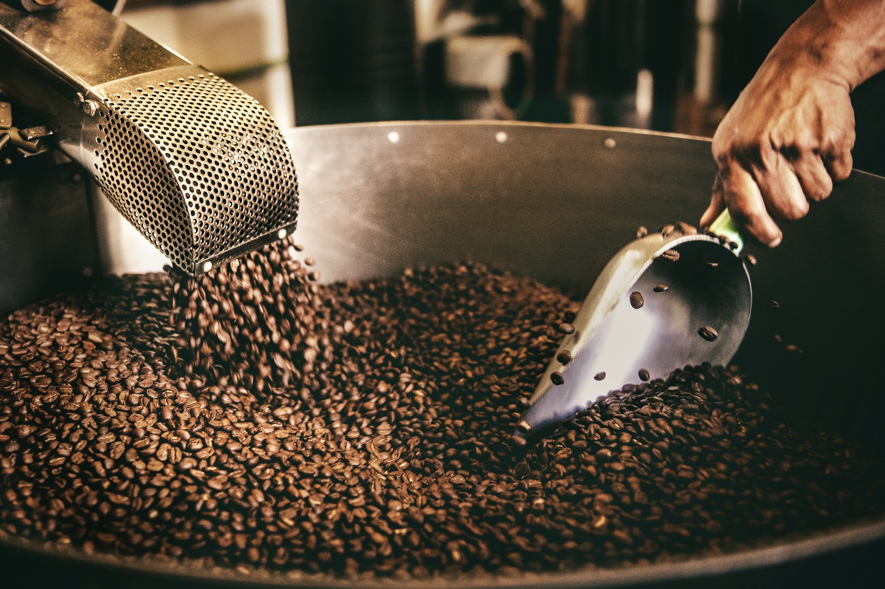
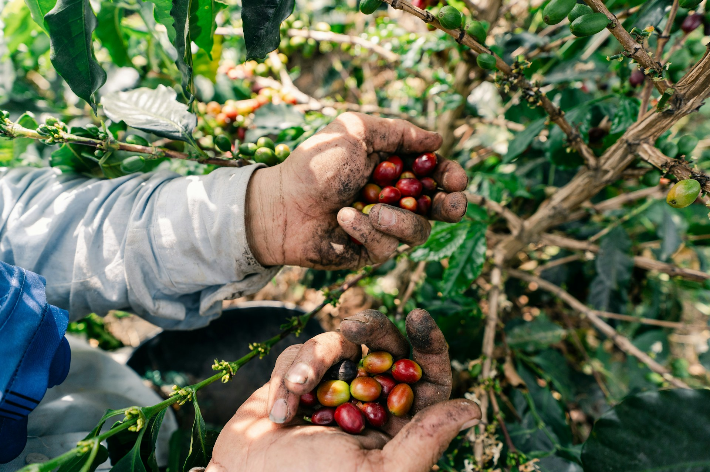
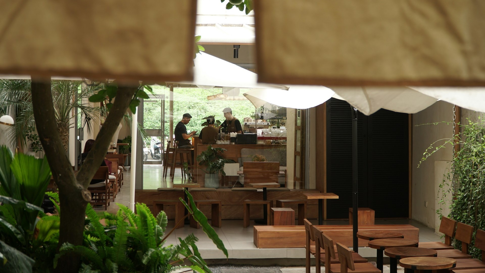
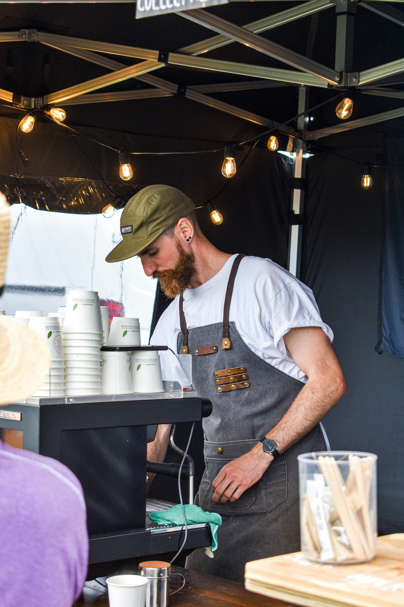
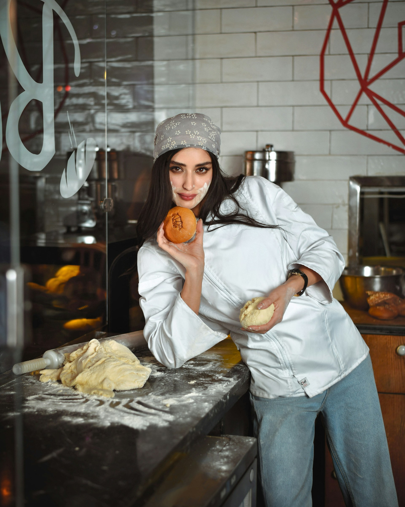

Founder & Head Roaster
Mochamad Sugiana
Merancang profil sangrai mingguan dan menjalin kemitraan langsung dengan petani kopi lokal.
SEGI Coffee lahir dari keyakinan sederhana bahwa secangkir kopi yang baik membutuhkan ketelitian pada setiap prosesnya—mulai dari kebun petani hingga meja tempatmu singgah.

Didirikan oleh Mochamad Sugiana, SEGI Coffee bermula dari ketertarikan mengeksplorasi kekayaan karakter biji kopi dataran tinggi Priangan—seperti Gunung Galunggung, Cikuray, dan Puntang.
Kami ingin menghadirkan ruang kopi yang terang, rapi, dan tidak mengintimidasi, sehingga baik penikmat kopi spesialti maupun pengunjung yang baru mulai mengenal seduhan manual merasa nyaman bertanya dan menikmati waktu.

Nama SEGI merepresentasikan empat aspek utama yang selalu kami jaga keseimbangannya dalam operasional kedai setiap hari:

Pilih tahun di bawah ini untuk melihat tonggak perkembangan kami dari waktu ke waktu.

SEGI Coffee resmi membuka pintu pertamanya di Kota Tasikmalaya dengan kapasitas 35 kursi, mengusung konsep ruang minimalis hangat dan kurasi biji kopi tunggal asal Jawa Barat.
Lihat Dokumentasi Ruang
Merancang profil sangrai mingguan dan menjalin kemitraan langsung dengan petani kopi lokal.

Bertanggung jawab atas kalibrasi espresso harian dan pengembangan menu signature musiman.

Memastikan setiap croissant dan kudapan pendamping kopi dipanggang segar setiap pagi.